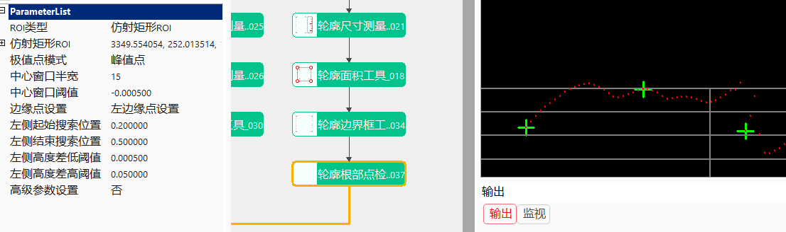
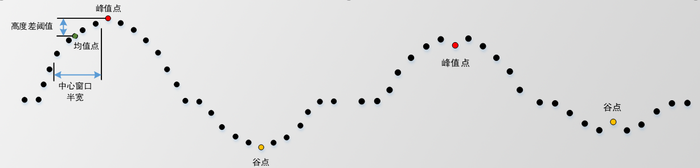
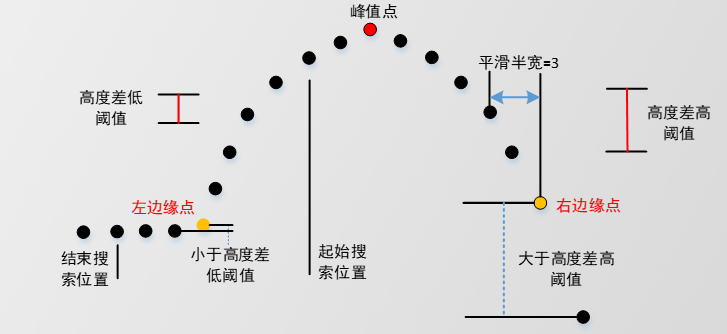
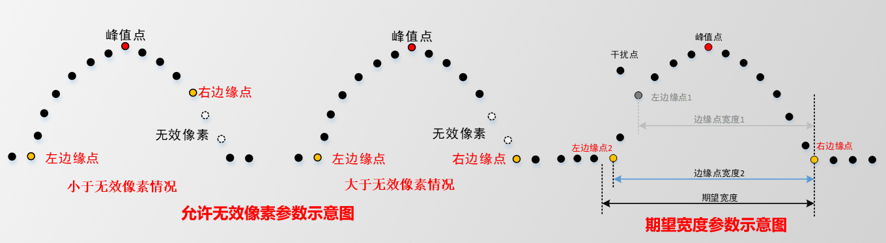
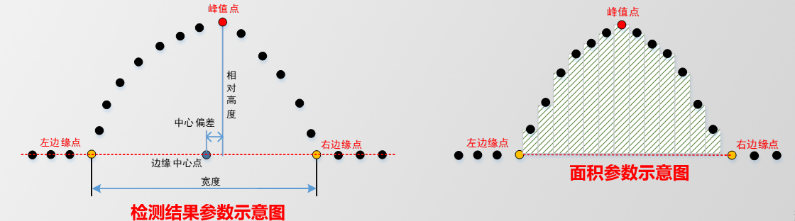

轮廓根部点检测工具计算轮廓极值点和边缘点的工具。
在3D项目中检测胶体、珠体或凹槽等检测数据，通过检测截面轮廓数据的峰值点或根部边缘点特征来判断是否存在缺陷，但已有工具只能获取轮廓的边沿点（上升/下降）、最大/小值点等，无法稳定地获取轮廓的根部边缘点，导致计算的特征信息无法反映轮廓数据的真实特征。针对胶体、珠体或凹槽等缺陷检测数据，获取其轮廓数据的极值点和边缘点等特征点信息，计算特征点的高度、宽度、面积和中心偏差等特征来判断检测数据是否存在缺陷。
step1：添加图像文件、截面生成工具、轮廓根部点检测工具，并进行参数的链接，如图3-1所示；

step2：极值点参数设置：
中心窗口半宽：获取极值点时计算左/右均值的数据点个数，默认值15。 高度差阈值：极值点与均值点的高度差阈值，高度差大于该阈值的才被考虑为候选极值点。默认设置为-0.0005，取值范围：[-1000，1000]

step3：边缘点参数设置：
左/右边缘点起始/结束搜索位置：此范围即为查找边缘点的范围，取值范围：(0，10] 高度差低阈值：小于该阈值的点即为边缘点，默认值：0.0005，取值范围：[-10，10] 高度差高阈值：大于该阈值的点即为边缘点，默认值：0.0500，取值范围：[-10，10] 平滑半宽：平滑半宽为3，用三个点的均值计算梯度，默认值为2，取值范围：[0，20] 允许无效像素：在搜索计算边缘点时允许最大连续的无效像素个数，大于该阈值则停止搜索，默认值为5，取值范围：[1，20] 期望宽度：期望获得边缘点的宽度，默认值为0.1000，取值范围：[-1000，1000]


step4：执行结果：
绝对高度：极值点的绝对物理高度，即Z值 相对高度：极值点相对与边缘点连接直线的距离 宽度：边缘点X方向之间的距离 中心偏差：即中心点偏差，边缘中心点与极值点X之间的距离 面积：两边缘点之间的数据点与边缘点连线所包围的面积。由于成像或物体遮挡等原因导致轮廓数据存在缺失像素时，可以填充后在求取面积，未填充则不计算缺失像素处的面积。

无
| 参数名称 | 参数说明 |
|---|---|
| 输入轮廓数据 | 输入待检测的轮廓数据，该参数来源于截面生成工具 |
| 二维线性变换 | 目标相对于模板的平移、旋转、缩放变换 |
| 参数名称 | 参数说明 |
|---|---|
| ROI类型 | 分为3种，整幅图像、矩形ROI和仿射矩形ROI |
| 极值点模式 | 包括两种模式：峰值点、谷点 |
| 中心窗口半宽 | 获取极值点时计算左/右均值的数据点个数，默认设置为15，取值范围：[1,50] |
| 中心窗口阈值 | 极值点与均值点的高度差阈值，高度差大于该阈值的才被考虑为候选极值点。默认设置为-0.0005，取值范围：[-1000，1000] |
| 边缘点设置 | 设置并行运算的线程数百分比，有效范围为 (0, 0.75]，对应表示(0%, 75%]百分比范围。 |
| 边缘点设置 | 包括两种：左边缘设置、右边缘设置 |
| 左侧/右侧起始搜索位置 | 相对于极值点的边缘点起始搜索的位置，起始到结束搜索范围即为查找边缘点的范围，取值范围：(0，10] |
| 左侧/右侧结束搜索位置 | 相对于极值点的边缘点结束搜索的位置，起始到结束搜索范围即为查找边缘点的范围，取值范围：(0，10] |
| 左侧/右侧高度差高/低阈值 | 相邻数据点的高度差的高/低阈值，小于该阈值的点即为边缘点，取值范围：[-10，10] |
| 高级参数设置 | 显示可以调节的高级参数 |
| 平滑半宽 | 计算高度差时相邻数据点之间取均值的半宽，平滑半宽为3，用三个点的均值计算梯度（高度差），默认值为2，取值范围：[0，20] |
| 允许无效像素 | 在搜索计算边缘点时允许最大连续的无效像素个数，大于该阈值则停止搜索，默认值为5，取值范围：[1，20] |
| 开启期望宽度 | 开启设置期望获得边缘点的宽度 |
| 期望宽度 | 期望获得边缘点的宽度，默认值为0.1000，取值范围：[-1000，1000] |
| 参数名称 | 参数说明 |
|---|---|
| 极值点、左边缘点、右边缘点、面积、绝对高度、相对高度、宽度、中心偏差 | 计算结果 |
| 参数名称 | 参数说明 |
|---|---|
| 输入轮廓数据 | 输入的轮廓数据，包括轮廓点数，有效点数 |
| 计算结果 | 主要包括：极值点、左边缘点、右边缘点、面积、绝对高度、相对高度、宽度、中心偏差 |
| 执行时间 | 工具执行时间 |
| 执行结果 | 工具执行结果 |
参见“\Samples\3D\深度图\3D测量工具.gvp”。
无